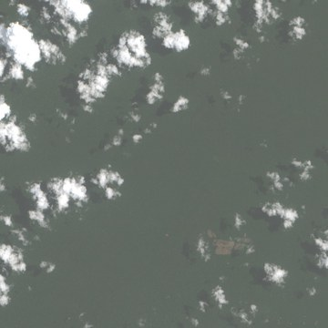
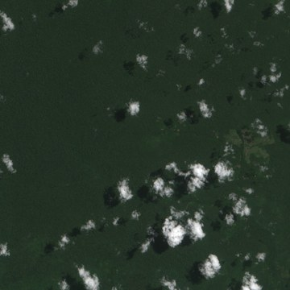
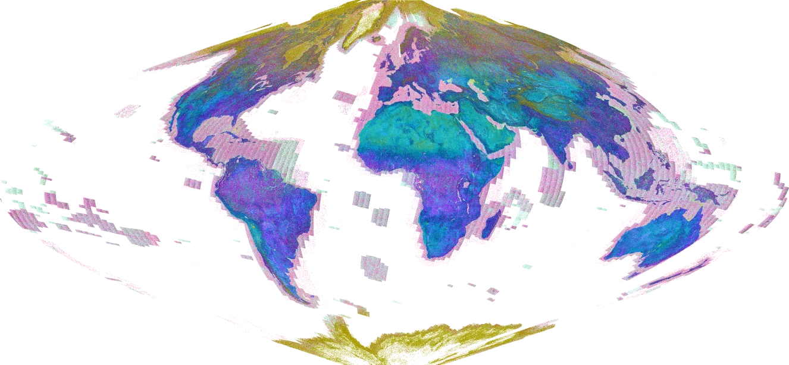

Two regularisations for embeddings that remember the weather
To curate a large Earth-observation archive with a frozen foundation model, you compare the embeddings of its tiles. We found that those embeddings encode the satellite pass that imaged each tile about as much as the landscape, and built two regularisations to remove that effect before any comparison. They read different metadata, when each tile was acquired and where it is, and they are complementary. This post walks through both, with interactive figures on real data.
The problem
On Major-TOM, 92% of the embedding difference between two neighbouring tiles comes from the satellite pass that imaged them, not from what is on the ground. Neighbours are almost never imaged together, so the map becomes a patchwork of acquisition days.
Fix 1 · acquisition correction
Reads when each tile was acquired. Two nested offsets are estimated and subtracted: one per pass, which carries the acquisition context (satellite, processing software, viewing geometry), and one per 120 km block of that pass, which carries the weather along the strip. Nearly all of the pass effect goes, and local detail stays.
Fix 2 · spatial regularisation
Reads only where each tile is. An edge-aware smoother pulls each tile slightly toward neighbours that look like it, removing what belongs to that tile alone, such as a small cloud or a patch of haze. It is a small correction, aimed at the noisy directions rather than the signal.
Seen with real revisits
On S2-NAIP, where each place is imaged about 25 times in a season, changing the day moves a tile's embedding as far as moving to the next tile, and the acquisition correction removes most of that.
Each fix sees an error the other cannot, and the first helps the second: once the pass offsets are gone, neighbours that share a landscape also look alike, so the spatial step has more of them to pool.
How this post is organised
Up close, maps of satellite-image embeddings look like static. Where it comes from: the satellite pass that imaged each tile, not the ground.
Curation is a sequence of cosine similarities
The archive is Major-TOM Core-S2L2A: 2.2 million Sentinel-2 tiles of about 10 × 10 km covering the land surface and coasts. We embed each tile once with a frozen encoder (UniverSat, mean-pooled to 768 dimensions and ℓ2-normalised). Every later curation step works on those vectors only: clustering, deciding which tiles are near-duplicates, and ranking which to keep under a fixed budget.
Major-TOM images each place exactly once: one product per grid cell, picked as the least-cloudy available. A tile's embedding therefore mixes things that cannot be separated tile by tile: the landscape, the context of the acquisition (which satellite, which version of the processing software, the sun and viewing angles), and the weather of that day (haze, thin cloud, moisture). Here is what that looks like for two neighbouring tiles of the same rainforest:


Similarity is the cosine between the two tiles' embeddings after centring on the archive mean (in the 64-D PCA space of the 2.24M embeddings), so 0 means no more alike than two random tiles from anywhere on Earth. The first two rows summarise every pair of adjacent forest tiles in the Amazon basin. The haze in A is visible to the eye; to the embedding it is the main thing about the tile.
A diversity-seeking selection that sees A and B as unrelated will keep both, spending part of its budget on weather rather than on landscapes. The question that started this work was simple: how big is that effect across the whole archive?
Up close, the embedding map looks like static
A good way to see an embedding field is to project all 2.24M vectors onto their first three principal components and paint them as RGB on the Major-TOM grid, one pixel per tile. At world scale (left below), it looks like a well-behaved map: deserts, rainforests, ice caps and the boreal belt each get their own colour.
Zoom into a 1000 × 1000 km window, though, and adjacent tiles jump between magenta and teal with no geographic logic. Drag the divider to compare the raw embeddings with the corrected ones; the river network of the central Amazon is hidden under the static.

The two corrections act at different scales, and it shows. The acquisition correction (middle stage) changes the picture completely: once each pass's context and weather are removed, coastlines, river networks and relief appear in every window. The spatial regularisation only acts on what is left at the scale of single tiles, so on this map it is a gentle polish. The rest of this post explains where the static comes from, and how each method removes it.
It is not the place. It is the pass.
Sentinel-2 images the Earth in long strips. One continuous acquisition, identified by its sensing start time, is what we call a pass. All tiles of a pass share the same acquisition context: the satellite and its calibration, the sun and viewing geometry, and the version of the processing software. Along the strip they also share the weather, which changes from one region to the next. Major-TOM then picks the least-cloudy product independently for each grid cell, so the final mosaic is a patchwork: neighbouring cells usually come from different passes, taken on different days.
In the real archive, a typical pass is a sparse trail of about a dozen tiles spread over thousands of kilometres and several climate zones, and fewer than one adjacent pair in twenty shares a pass. Neighbours are almost never imaged together, so every border between two tiles is also a border between two acquisitions.
The same thing, on real tiles
Here are 144 real Major-TOM tiles around Santarém, where the Tapajós meets the Amazon. Switch between the satellite images and the colour of each tile's embedding, then hover a tile to light up every other tile imaged by the same pass.
The patch is stitched from dozens of passes, about two tiles each. In the raw view, neighbouring tiles of the same forest jump between magenta and teal, and the pass predicts the colour better than the ground does: two tiles imaged by the same pass are on average half as far apart as two tiles from different passes, whatever they show. After the correction the pass no longer matters, and the river and floodplain stand out from the forest. Hatched cells have no thumbnail.
A control group for free
Because no place is imaged twice, the effect of the acquisition cannot be measured by comparing two images of the same place. However, each pass covers many cells, which gives an equally useful comparison. Take every pair of tiles at a given distance and split the pairs by whether they come from the same pass. Both groups are compared at exactly the same distance, so geography is matched by construction, and any difference between the two curves is the acquisition.
At the shortest distance, two tiles from different passes differ about thirteen times more than two tiles from the same pass. The different-pass curve is almost flat: two neighbours from different passes are nearly as different as two tiles a few hundred kilometres apart.
92% of the difference between two neighbouring tiles is which pass imaged them. Over open water, where there is almost no landscape to tell apart, it is nearly all of it.
The same-pass curve shows the actual geography: it starts low and rises with distance, as a landscape should. The different-pass curve sits above it like a floor, and that floor hides all geographic structure below continental scale. This is the static in the map.
What is the offset made of?
If the offset came from known factors such as season or sun angle, we could regress it out. So we tried: twelve metadata covariates, each fitted alone and then jointly, as predictors of the estimated per-pass offsets.
Year and processing baseline overlap: older products were made with ESA's earlier processing baseline. The largest identifiable factor in the encoder's output, after geography, is which version of the processing software made the product.
Metadata explains only a quarter of the offset, and the split is telling. The covariates describe the acquisition context: when, by which satellite, with which software. None of them describes the weather, which changes along each strip and from one pass to the next. So instead of modelling the offset from metadata, we estimate it directly from the tiles of each pass, at two scales: once for the context shared by the whole pass, once for the weather that drifts along it.
Subtract what each pass shares, using when each tile was imaged; then let neighbours vote on what is left, using where it is.
Subtract the pass, not the neighbourhood
We model each embedding as a smooth geographic signal plus two nested acquisition offsets:
The output is the tile minus its two offsets, \( f_i^{\text{corr}} = f_i - \delta^{\text{pass}}_{p(i)} - \delta^{\text{block}}_{b(i)} \). No neighbourhood average is added to a tile's vector: two tiles of the same block receive the same correction, so their difference is preserved exactly. The smooth field \(s\) is needed only to fit the offsets. One honest caveat: a block of one or two tiles has an offset estimated from those tiles alone, which pulls them part of the way toward their surroundings; the shrinkage below bounds this, and the per-tile guardrails in Part III show it does not cost local detail.
We fit the model by backfitting: alternately (1) estimate \(s\) by Gaussian smoothing of the current residual (\(\sigma = 6\) km), (2) set each pass offset to the shrunk mean of its tiles' residuals, (3) do the same for blocks. Four rounds are enough. Step through it on a one-dimensional toy:
How much to trust a small group
A pass with two tiles gives a much noisier mean residual than a pass with two hundred. The offsets are therefore given zero-mean random-effect priors, which turns each estimate into a shrunk mean:
The variances are estimated from the data, so the shrinkage has no free parameter. In the toy above, the two-tile pass is only partly corrected for exactly this reason. Because blocks are fitted within passes, a block only has to explain how it deviates from its own pass, and an under-sampled block falls back toward the pass estimate.
Why the blocks matter
A pass offset captures the acquisition context, but not the weather. A strip thousands of kilometres long crosses several climates and weather systems, so a single constant per pass leaves diagonal banding behind and removes only about half of the same-pass vs different-pass gap. Blocks of 120 km inside each pass, fitted jointly with it, follow the weather along the strip and bring the removal to 94%. The block size is a trade-off with a clear knee. While a block is large, its tiles are spread over many landscapes and their mean residual is the weather. Make it much smaller than 120 km and the block shrinks toward a single neighbourhood: its mean starts to contain the landscape, and local detail goes with it.
The obvious objection is that, with groups this small, subtracting a group offset is just neighbourhood smoothing under another name. It is not, and the figure below shows why. We measure two things on adjacent land tiles: how much of the same-pass vs different-pass gap is removed (the nuisance), and how much of the genuine difference between neighbours from the same pass survives (the detail).
The best blur removes almost as much of the gap but loses half of the local detail. A blur cannot tell a pass offset from a real landscape boundary, while the correction only ever subtracts quantities shared by a whole group.
What the correction gains shows best on the rare tiles. A built-up tile surrounded by empty land should stand out from its neighbours. In the raw field it does not: ranking tiles by local contrast finds isolated towns barely better than a coin flip, because the offset between two passes swamps the contrast between a town and its fields. After the correction, isolated towns become clearly detectable and islands stand out more sharply. The tiles most worth keeping were not just noisy: they were hidden among their neighbours.
Let the neighbours vote, gently
After the acquisition correction, what remains of the acquisition is what no group of tiles shares: a small cloud, a patch of haze smaller than a block, anything that touched one tile and not the rest of its strip. No metadata points to it, but geography does. The second method reads where each tile is, and nothing about when it was imaged. Neighbours were almost always imaged on different days, so their leftover noise is independent while their landscape is shared. Averaging over neighbours should therefore cancel the noise and keep the landscape.
The catch is that averaging also blurs the real signal. A coastal tile gets pulled toward the sea, a town toward the fields around it, an island toward the ocean. That blurred-away detail is exactly the local diversity a curation method should keep. So the averaging has to be gentle and edge-aware. We use three ingredients:
Try it on a synthetic landscape with a coastline, two land-cover types, an island and a one-tile town. The noise is what remains after the acquisition correction. The meters compare the output with the noise-free truth.
The plain blur removes the most noise, but the island and the town fade into their surroundings and land-cover edges lose most of their contrast: it averages across boundaries as readily as within them. Our setting removes less and leaves edges, island and town intact, because a tile only borrows from neighbours that look like it, and only part of the way. The toy noise is much larger than the real residual so that the effect is visible.
A small effect, aimed at the right directions
On the real archive, the regulariser is mild: it removes a few percent of the embedding variance, and every tile stays very close to where it was. Where that variance is removed matters more than how much. Split by principal direction, the profile looks like a filter acting on a noise floor, not like one that removes signal.
The acquisition offset is structured: it takes nearly half of the variance in every direction, the leading ones included. A change of software version or of haze alters the whole image, so it moves the embedding along the main directions as much as along minor ones. The spatial regulariser bites least where the signal is and most in the tail, the shape expected from a filter acting on a roughly isotropic noise floor. One caveat: the tail holds little variance, so in absolute terms 90% of what the regulariser removes still comes from PCs 1–25.
Complementary, not interchangeable
The two fixes read different metadata, so they pool different tiles and see different errors. Fix 1 groups the tiles that share a pass: imaged at the same moment, scattered along a strip thousands of kilometres long. What they share is the context and the weather, and that is what it removes. Fix 2 groups the tiles that share a place, which on Major-TOM were almost never imaged together. What they share is the landscape, so what it removes is whatever a single tile does not share with its look-alike neighbours.
That is why a smoother cannot do fix 1's job. Nothing in a tile's position says which pass imaged it, so the spatial regulariser removes no more of the between-pass variance than of the rest of the map: it cannot aim at the acquisition offset. A smoother strong enough to cancel the offsets anyway, such as a plain 3 × 3 box mean, takes over a third of the real map with them.
In the other direction, fix 1 helps fix 2. Across the whole archive, the same spatial step moves the embeddings 1.5 times more after the acquisition correction than before it, even though the corrected field has less left to smooth. That is the edge-aware weight at work: a tile borrows only from neighbours that look like it, and once the pass offsets are gone, the neighbours that share its landscape look like it again. So we run them in that order: time first, then space.
Both fixes on the Amazon, a check against real revisits of the same place, and how to tell a denoiser from a blur.
The teaser, step by step
The teaser at the top of this post applies both regularisations, in order, to a 1,000 × 1,000 km window of the central Amazon, a mosaic stitched from hundreds of passes over eight years. With everything above in hand, here are the four combinations of the two, including the one the teaser skips (b):
- athe raw field. Neighbouring tiles from different passes jump between colours, and the Amazon itself is barely visible;
- bthe spatial regulariser on its own. It smooths the map, but it cannot see passes, so the patchwork stays in place;
- cthe acquisition correction. Each pass loses its context and each block its weather, and the patchwork goes. The teaser applies it in one go; the figure below replays it pass by pass;
- dboth corrections. The same spatial step as in (b) now brings out the river network: with the offsets gone, neighbours that share a landscape look alike again, and the step can pool them.
Stage (c) is where the patchwork goes, so here it is slowed down, following the two levels of the model. First the context: the passes that cross the window are corrected one at a time, in the order they were acquired, each losing the part of the correction that all its tiles share, across the whole archive. Then the weather: each 120 km block of a pass loses the remainder, so the last frame is exactly the acquisition-corrected field.
Each pass touches only a few scattered tiles of this window, so no single pass changes much: the static fades as they accumulate, not at any one date. Hover the map or the dates to pick out one pass.
Here are the same four fields side by side as a 2 × 2 grid. Hover a panel to mark the same tile in all four:
Reading across a row shows what the spatial step does; reading down a column shows what the acquisition correction does. Across the top row the map gets smoother, but the pass patchwork survives: smoothing cannot tell it from the landscape. Down either column the patchwork disappears. The same spatial step changes (d) more than (b): once time has been accounted for, space has more to work with.
Same place, different day, literally
Major-TOM never images a place twice, so everything so far infers the acquisition effect, and its correction, from passes. S2-NAIP lets us check both on the same ground: millions of 640 m tiles over the continental United States, each imaged by Sentinel-2 about 25 times in a season. Here is one 20 × 20 km block over Albuquerque, New Mexico (the city's street grid, the airport, the green corridor of the Rio Grande and the foothills to the east) on 26 clear days between April and August 2020, with the UniverSat embedding of every tile on every day.
Every day side by side. Each tile minus its own average over the season: grey means the tile looks as it usually does, colour means it looks different that day. Raw and regularised share one colour basis and one stretch; click a day to show it above.
In the raw panel, the whole block often changes colour at once, city and foothills alike: that is the day's context and weather, shared by every tile, not something on the ground. The regularised panel applies the acquisition correction, adapted to one block with revisits. A 20 km block is smaller than one of our 120 km blocks, so on a given day it has a single context and a single weather, and the pass and block offsets merge into one offset per day. The revisits allow a second term, one offset per tile and orbit, explained below. In the strip, the raw rows carry a tint that changes from day to day and is shared by the whole block; the regularised rows are mostly grey. What stays coloured is local: small clouds and their shadows on 21 April, a band of cloud shadow on 20 July, and a tint on the first two days of April, probably the spring change. That single-tile leftover is what the spatial step is for. Black tiles were filtered as cloudy that day.
Why a second term? This block lies where two Sentinel-2 orbits overlap, so it is seen from two viewing angles that alternate every few days. Switch to Grouped by orbit: the raw rows of the strip split into two tints, one per orbit, and the raw panel plays smoothly, with a single jump where the orbit changes. A change of viewing angle does not move every tile by the same amount, because a street grid, a riverside wood and a mountain slope reflect light differently depending on the angle they are seen from, so no single offset per day can undo it. The per-day offset alone leaves the orbit responsible for half of a tile's day-to-day change. Revisits give a way out: each tile is seen thirteen times from each orbit, enough to learn how that tile shifts between the two viewing angles and to subtract it, while keeping the tile's average untouched. With that term, the orbit explains almost none of what is left.
The revisits let us measure "same place, different day" directly, on the same ground. Changing the day moves a tile's embedding as far as moving to the next tile on the same day. And at every separation, pairs from different days sit above pairs from the same day: the same acquisition floor as on Major-TOM, now with the landscape held fixed.
The correction cuts the same-tile distance by two-thirds and leaves same-day distances almost unchanged: it removes what the tiles of a day share, and how each tile shifts with the viewing angle, not what tells tiles apart. Over a single block, the per-day offset also absorbs the block-wide seasonal change from April to August, so it overstates the purely acquisition-related share.
The effect is real but much smaller than on Major-TOM: the date explains under a tenth of the embedding variance in this block, where the pass explains half of it on Major-TOM. The split between context and weather suggests why. This block sees one season and one granule, almost always through the same version of the processing software, so the parts of the context that change from day to day are mainly the satellite and the viewing angle; the rest is weather. On Major-TOM, neighbours can be years apart and processed by different software versions, the largest identifiable part of the offset. The imagery also differs (smaller tiles, no atmospheric correction), so the comparison is indicative only.
How to grade a denoiser (and how not to)
Every number above needs a way to tell a denoiser from a blur, and the first metrics we wrote down all rewarded the wrong method. Here are three plausible metrics and the two per-tile guardrails we rely on instead, evaluated on all 2.24M Major-TOM tiles for the raw field, an aggressive neighbourhood blur, and the acquisition correction:
Why the first three fail: a blur makes every tile look like its neighbours, which drives neighbour differences to zero, inflates edge-to-flat contrast ratios, and lets a land-cover probe read each tile's label from its neighbourhood (pure leakage). Why the guardrails hold: they are scored per tile from that tile's own vector, on tiles that differ from their surroundings, so copying the neighbourhood is penalised. Blur loses both; the correction improves both.
One implementation trap is worth passing on. An occupancy-normalised neighbourhood mean returns zero for a tile that has no neighbours, which silently zeroed a few thousand lone tiles in our first implementation. Those were exactly the remote islands the exercise was meant to protect; the fix is to fall back on the tile's own value.
What to keep from all this, and when not to use these corrections.
Three lessons
Check the pass before trusting a neighbourhood
If you use frozen EO embeddings as a map (retrieval, change detection, clustering, curation), split your variogram by acquisition. On Major-TOM, most of what separated two neighbouring tiles was the pass, not the ground. When the archive has revisits, as S2-NAIP does, compare a place with itself on another day.
Use both kinds of metadata: time first, then space
Split the acquisition by scale: the context shared by a whole pass, the weather shared by a stretch of it, and the noise of a single tile. The first two come from when each tile was acquired, and subtracting them removes nearly all of the pass effect for almost none of the detail. The last comes from where each tile is, through a gentle smoother that works better once the first two are gone. A smoother alone cannot target a nuisance it cannot identify.
Grade a denoiser per tile, on the tiles that matter
Any metric based on neighbour similarity ranks the blurriest method first. Per-tile guardrails, such as land-cover probes on tiles unlike their neighbours and island detectability, are what tell a denoiser from a blur.
When the day is the signal
Both corrections rest on one choice: the conditions of an acquisition are treated as noise. That choice suits only some uses of the embeddings. For many applications, different acquisitions of the same place are exactly what is useful. Change detection, crop and phenology monitoring, and flood or wildfire mapping all live in the difference between two days. A correction that makes every day look alike would erase what they are looking for.
Even when the goal is semantics, part of what a pass shares can be real. The model only sees what tiles have in common, so anything uniform over a whole block of a pass is read as weather: a regional flood, a snowfall, the green-up of a season. On S2-NAIP, the per-day correction removes the block's seasonal change along with the acquisition effect. Shrinkage and the block size limit how much of this goes, but by construction the model cannot tell a regional event from the weather over the same stretch.
Both fixes also assume that an acquisition shifts every tile of a block by the same amount. Effects that depend on the landscape break that assumption. On S2-NAIP, a change of viewing angle moves a street grid and a mountain slope differently; revisits make it possible to learn that shift tile by tile. In an archive that sees each place once, such as Major-TOM, it survives both fixes: the spatial step cannot remove it, since look-alike neighbours imaged on the same day share it.
This approach is therefore aimed at one kind of question: comparing the embeddings of a geospatial foundation model on their semantics, the information they capture about the ground. Because both corrections act on the embeddings rather than on the encoder, nothing is lost by applying them: the raw embeddings stay available, and the right version depends on the question being asked.